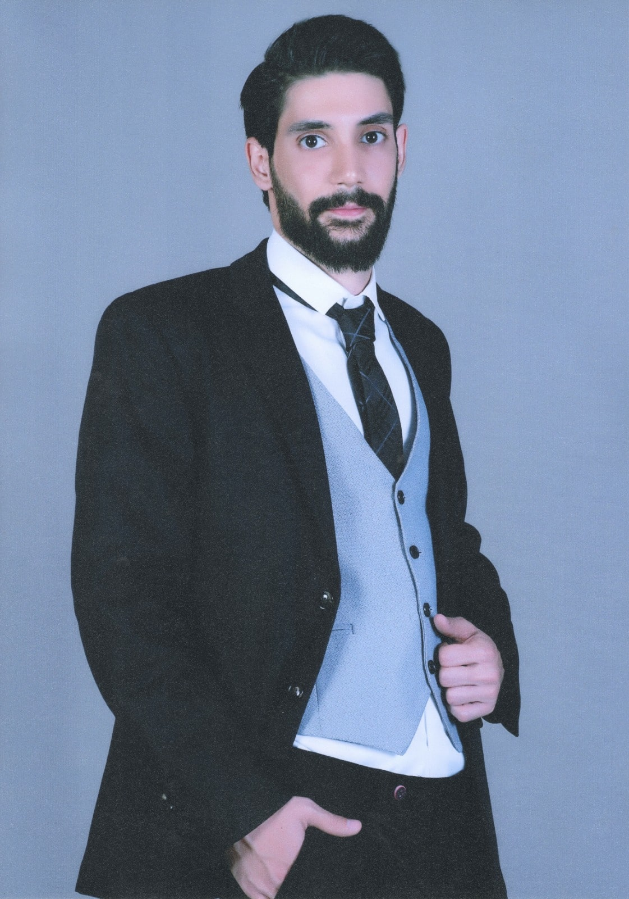

Welcome to My Website!
My name is Pouria Pourrashidi, a Web and Python Developer. For further information please download my resume.


I'm a second year master of science student in Electrical and Computer Engineering at Concordia University. Right now, I'm working on my thesis, which is about the improvement of IoT Task Offloading using Software-Defined Networks (SDN) under supervision of
Prof. Shayan and Prof. Coutinho. Beside working on my thesis, I would like to teach in the university. I've been a teacher assistant for Computer Networks and Protocols (Graduate Course), Computer Organization and Assembly Language, System Hardware, Database, Computer Organization and Software, Discrete Mathematic, and Programming Methodology courses during my graduate studies, and some other courses in my undergraduate. Beside software/web development, I am enthusiastic about Computer Networks, and during my undergraduate studies, I got certificates for MCSE2016
and Cisco CCNA.
For my hobbies, I like to go to gym, watch soccer games, and go to concerts.
Please download my resume from Here!


Herein you can observe a summary of projects that I have done. More projects can be found in my resume and github page!
By using the power of React, Express, and PostgreSQL, this project aims at recognizing a human face at a given image. The faces has been deted using the Clarifai API.
In this funny project, from a list of robots that has been fetched from an API, you search between a list of robots to find the desired one. In this project Redux for fetching Robots and SearchField and Hooks has been used.
This music player plays series of music. User can change the musics as well as the timeline to mover forward or backward.
A custom countdown, which givs the user ability to setup a countdown to a specific date. The application uses local storage to save last countdown.

Implementation of remote and distributed file storage using Remote Method Invocation (RMI) and client-server communication. File operations has been implemented in this project, such as read, write, create file, and etc.
Implementing several IoT networks using Software-Defined Network with POX controller (Python based) for jurnal and confrence papers